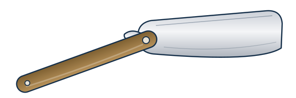

Blog · Nº 001
A navalha de Occam
simplicidade tomada de decisão planejamento gestão

O processo de seleção do novo diretor de engenharia estava sendo conduzido por Steve, diretor de RH, com o apoio de Simplorim. A empresa havia decidido recrutar internamente: o novo ocupante do cargo sairia do próprio quadro de engenheiros. Depois de algumas etapas de triagem, restaram três candidatos.
A cada um foi pedido um plano de reestruturação para modernizar o departamento, com uma semana de prazo. Ao final, cada candidato deveria entregar o plano por escrito e apresentá-lo.
O primeiro entregou um relatório de 200 páginas e falou por duas horas. O segundo trouxe um plano de 15 páginas e o apresentou em 25 minutos. O terceiro resumiu tudo em uma única página e defendeu suas ideias em 5 minutos.
Steve e Simplorim se reuniram a sós para decidir. Steve estava confuso:
— O que fazemos? Qual é o melhor? As ideias são muito parecidas, e os três mostraram conhecer bem o departamento. O que muda de um para o outro é a forma: uns tendem a resumir, outros a detalhar.
— Acho que é caso para a navalha de Occam — respondeu Simplorim.
— E que diabo é isso?
— Guilherme de Ockham foi um frade e filósofo inglês do século XIV. O princípio que leva o nome dele diz que, entre duas explicações que dão conta dos mesmos fatos, deve-se preferir a mais simples — a que depende de menos suposições. A navalha corta o que não é necessário.
— Então ganha o terceiro, que foi o mais sucinto.
— Não necessariamente. Há uma frase atribuída a Einstein que completa a
ideia: tudo deve ser feito da forma mais simples possível, mas não
mais simples do que isso
.
— Entendi mais ou menos. Continuo confuso.
— É simples. O primeiro candidato apresentou um trabalho longo e cheio de detalhes, mas o plano é complexo demais, difícil de absorver e de implantar. O excesso de detalhe costuma engessar as organizações.
— E o terceiro?
— Fez um trabalho bem resumido, o que, em princípio, é bom. Mas uma análise mais cuidadosa mostra que pontos importantes ficaram de fora. O plano dele é mais simples do que deveria ser.
— E o segundo?
— Apresentou um trabalho com a consistência adequada. Os pontos principais foram tratados na medida certa.
— É verdade — concordou Steve. — O segundo encontrou o equilíbrio entre a síntese e a análise.
— Como já dizia meu decavô Nostradamim: nem tanto, nem tão pouco.
— Pelo visto, a decisão está tomada — disse Steve, encerrando a reunião.
O que fica
A navalha de Occam não manda escolher o plano mais curto; manda cortar o que não faz falta. Quem corta de menos entrega um documento que ninguém consegue executar. Quem corta demais leva junto o que sustentava o plano. O bom trabalho é o que chega ao mínimo necessário — e para aí.